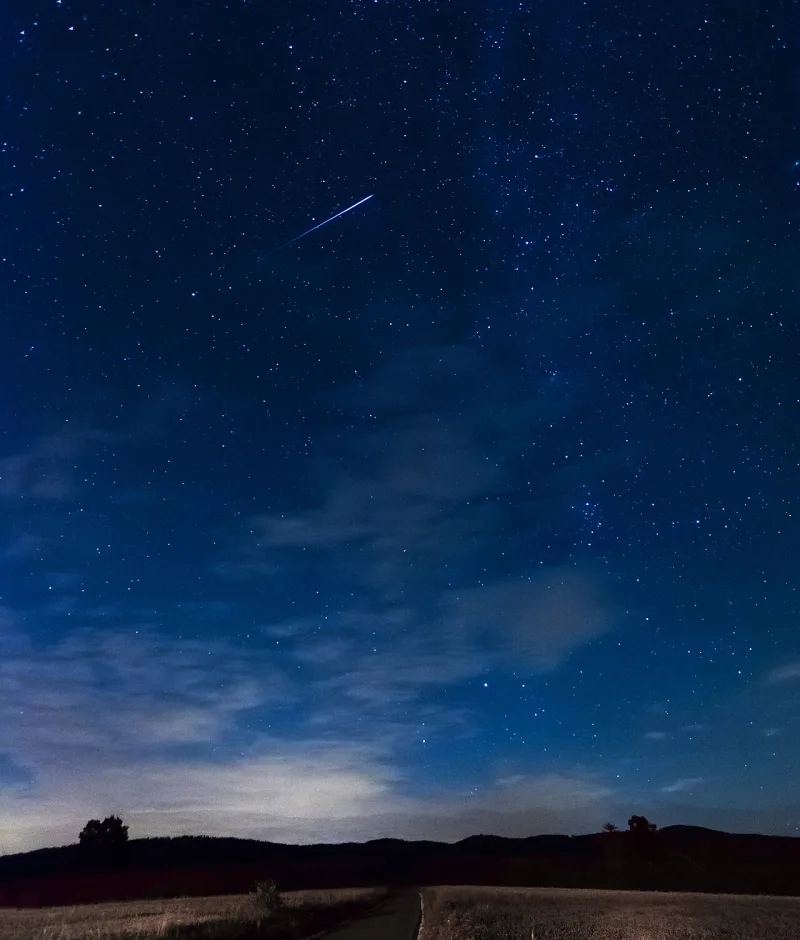
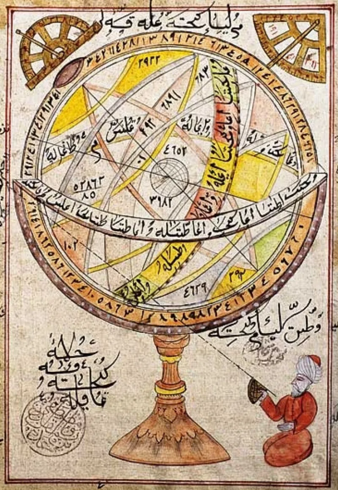

No good counter-argument has been published by Muslim scholars.
The Quran describes the sky as a structure. It is a ceiling held up without visible pillars (Quran 13:2; 31:10).
It could fall on people in pieces (34:9). There are seven stacked heavens (67:3), and the lowest is decorated with lamps.
Quran 67:5 says Allah made those lamps "missiles against the devils." Quran 37:6-10 and 72:8-9 say jinn who climb up to eavesdrop are pelted with burning flames. That treats stars and meteors as the same kind of thing.
Meteors are dust grains burning in our air. Stars are distant suns.
This is not a modern reading. Qatada, quoted in Ibn Kathir on 67:5, says the stars were created for three purposes: to adorn the heaven, as missiles for the devils, and as signs for navigation.
IslamQA and Ibn Kathir himself give a reply. In Arabic, najm and kawkab can mean any bright object in the sky, including meteors.
So 67:5 speaks of glowing projectiles, not suns being thrown. Ibn Kathir explains that a meteor of fire detaches itself while the star stays in place.
The seven heavens are unseen realms, not physical shells. And the canopy language is protective imagery, since the atmosphere really does shield the earth.
Strong for you, but state it carefully. The unseen-realms reply works on its own.
The problem is that 67:5 names the objects as the same lamps that decorate the lowest heaven — the visible stars. Ibn Kathir's detaching-meteor gloss is itself a repair, and it still ties meteors physically to stars, which is not true.
"What did Qatada think the stars were for? His answer is in Ibn Kathir."


They say the Arabic covers meteors, and the heavens are unseen realms.
Ibn Kathir on 67:5, and IslamQA treatments, answer on the Arabic. Najm and kawkab can mean any glowing body in the sky, meteors included. So 67:5 speaks of glowing missiles from the lower heaven, not suns being thrown. Ibn Kathir himself explains that a meteor of fire detaches itself from the star, while the star stays where it is.
The seven heavens are unseen realms, not physical shells. Canopy language is protective imagery, since the atmosphere really does shield the earth. These verses describe the unseen. That is a matter of faith, and astronomy cannot test it.
Strong for you, but state it with care: 67:5 names the visible stars.
Quran 67:5 names the objects made into missiles as the same lamps that adorn the lowest heaven. Those are the visible stars, and Qatada's mainstream tafsir says exactly that. Ibn Kathir's detaching-meteor gloss is itself an attempted repair, and it still ties meteors physically to stars, which is false.
The reading fits the 7th-century experience of shooting stars precisely. The unseen-realms defence works on its own. But the missile verses tie the picture of the sky to objects anyone can see.